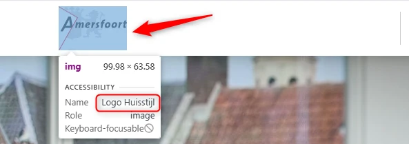
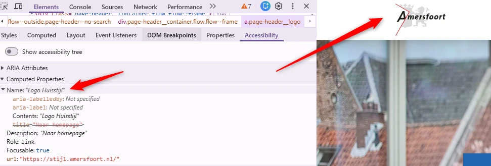
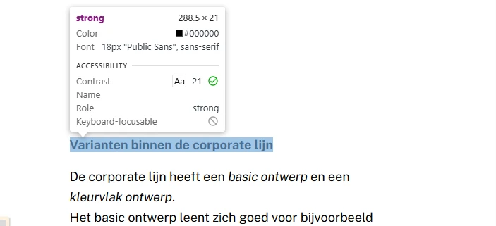
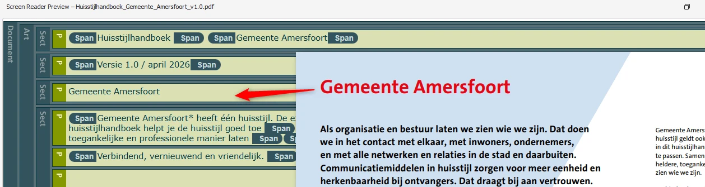
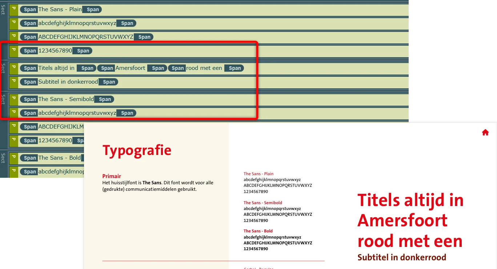

Content-audit digitale toegankelijkheid van website stijl.amersfoort.nl
Samenvatting
Wij hebben de content op de website stijl.amersfoort.nl onderzocht tussen 29 mei en 12 juni 2026. Op dit moment is een deel van de succescriteria als voldoende beoordeeld. In dit rapport lees je welke punten nog verbetering behoeven en hoe deze kunnen worden aangepakt.
#1 - Zichtbare tekst van het logo staat niet in het tekstalternatief
Impact: GrootType: ContentWCAG: 1.1.1EN: 9.1.1.1

Het logo bovenaan de website toont de volledige tekst "Amersfoort", maar het tekstalternatief is "Logo Huisstijl". Het tekstalternatief moet alle tekst bevatten die in het logo zichtbaar is, zodat bezoekers die de afbeelding niet kunnen zien dezelfde informatie krijgen.
User story
Als schermlezergebruiker wil ik dat het tekstalternatief van het logo overeenkomt met de zichtbare tekst, zodat ik dezelfde informatie krijg als ziende bezoekers.
Hoe te testen
Inspecteer de afbeelding van het logo en controleer of het tekstalternatief alle betekenisvolle zichtbare tekst van het logo bevat.
Oplossing
Pas het tekstalternatief aan zodat het de volledige zichtbare tekst van het logo bevat. Het tekstalternatief moet dezelfde informatie geven die visueel beschikbaar is en mag betekenisvolle tekst uit het logo niet weglaten of vervangen.
#2 - Tekst van het logo staat niet in de toegankelijke naam
Impact: GrootType: TechniekWCAG: 2.5.3EN: 9.2.5.3

Bovenaan de pagina toont het logo de tekst "Amersfoort". De toegankelijke naam van deze link is "Logo Huisstijl". Doordat de zichtbare tekst en de toegankelijke naam niet op elkaar aansluiten, werkt spraakbesturing niet goed. Spraakbesturing leunt op de zichtbare tekst van elementen. Als de toegankelijke naam afwijkt, dan wordt de link niet geactiveerd wanneer iemand de zichtbare tekst uitspreekt.
User story
Ik bedien de website met spraakinvoer. Ik verwacht dat ik elke link kan activeren door de tekst uit te spreken die ik zie. Maar als ik de zichtbare tekst van het logo uitspreek om de link te activeren, dan gebeurt er niets.
Hoe te testen
Vergelijk voor elk element met een zichtbaar tekstlabel die tekst met de toegankelijke naam (via het accessibility-panel in DevTools of een schermlezer). De zichtbare tekst hoort aan het begin van de toegankelijke naam te staan. Test met spraakbesturing: "klik op Amersfoort".
Oplossing
Zorg dat de toegankelijke naam van de logolink de zichtbare tekst bevat, bij voorkeur aan het begin. Idealiter is de toegankelijke naam gelijk aan de zichtbare tekst.
#3 - strong-element gebruikt in plaats van een kop
Impact: MediumType: ContentWCAG: 1.3.1EN: 9.1.3.1

Op deze pagina is de tekst "Varianten binnen de corporate lijn" een kop, maar het kopelement ontbreekt. In plaats daarvan is het strong-element gebruikt om de tekst eruit te laten zien als een kop. Het strong-element is bedoeld voor inhoudelijke nadruk, niet om koppen te maken. Door het te gebruiken in plaats van een kopelement (h1 tot en met h6) klopt de structuur van de inhoud niet en is die niet beschikbaar voor hulpsoftware.
User story
Ik lees de website met een schermlezer. Als ik per kop navigeer, mis ik titels die alleen vet of cursief zijn. Ik verwacht dat alle titels als echte koppen zijn gemarkeerd, zodat ik de structuur van de pagina kan volgen.
Hoe te testen
Loop door de pagina met DevTools en een schermlezer. Visuele koppen moeten ook in de HTML staan, niet alleen als gestylede tekst.
Oplossing
Verwijder het strong-element en gebruik het juiste kopelement voor deze tekst.
Op deze pagina werken de afbeeldingen onder de kop "Varianten" als links, maar hun alt-attribuut is leeg (alt=""). Daardoor hebben de links geen toegankelijke inhoud en is hun bestemming onduidelijk. De links hebben ook geen toegankelijke naam, wat in strijd is met succescriterium 4.1.2.
User story
Ik navigeer door de website met een schermlezer. Als ik op een afbeelding kom die als link werkt, hoor ik niets over waar die link naartoe gaat. Ik verwacht dat elke link een duidelijke omschrijving heeft, zodat ik weet wat de bestemming is.
Hoe te testen
Navigeer met een schermlezer naar de afbeeldingslinks en controleer of elke link met een betekenisvolle toegankelijke naam wordt aangekondigd. Bevestig dat de toegankelijke naam duidelijk maakt wat het doel of de bestemming van de link is.
Oplossing
Als een afbeelding de enige inhoud van een link is, wordt het tekstalternatief van die afbeelding de toegankelijke naam van de link. Geef elke afbeeldingslink daarom een betekenisvol tekstalternatief dat duidelijk maakt waar de link naartoe leidt en wat er gebeurt als die wordt geactiveerd.
#5 - Informatieve afbeelding heeft geen tekstalternatief
Impact: GrootType: ContentWCAG: 1.1.1EN: 9.1.1.1
Op deze pagina staat onder de kop "Toegankelijkheid: check je contrast" een informatieve afbeelding met kleurcombinaties en kleurspecificaties van de huisstijl. Deze informatie staat niet als toegankelijke tekst op de pagina en de afbeelding heeft geen beschrijvend tekstalternatief (het alt-attribuut is leeg). Onder de afbeelding staat een PDF-document als aanvullende documentatie, maar dat biedt op dit moment geen toegankelijk alternatief: de informatie staat daar ook als afbeelding zonder voldoende tekstalternatief. Daardoor kunnen schermlezergebruikers niet bij de kleurinformatie die ziende bezoekers wel zien.
User story
Als schermlezergebruiker wil ik dat informatie die in afbeeldingen staat ook als toegankelijke tekst beschikbaar is, zodat ik bij dezelfde inhoud kan als ziende bezoekers.
Hoe te testen
Inspecteer de afbeelding en controleer of alle informatie uit de afbeelding ook als toegankelijke tekst beschikbaar is, via een passend tekstalternatief of via gelijkwaardige inhoud elders op de pagina.
Oplossing
Zet de informatie uit de afbeelding als toegankelijke tekst op de pagina, bijvoorbeeld de kleurnamen, kleurcodes en toegestane kleurcombinaties als gewone tekst of in een toegankelijke tabel. Blijft de afbeelding op de pagina staan? Geef die dan een passend tekstalternatief of zet er tekst bij die dezelfde informatie geeft. Gebruik een PDF-document niet als enige alternatief, tenzij dat document zelf volledig toegankelijk is.
Op deze pagina wordt een kop van niveau 2 direct gevolgd door een andere kop van hetzelfde niveau. Zie bijvoorbeeld "Logo" en "Logo-varianten van Gemeente Amersfoort", en andere vergelijkbare koppen op deze pagina. Koppen horen een logische hiërarchie te volgen. Een kop hoort niet direct gevolgd te worden door een kop van hetzelfde of een hoger niveau zonder tussenliggende inhoud.
User story
Ik lees de website met een schermlezer. Als ik door de koppen navigeer, staan twee koppen van hetzelfde niveau direct achter elkaar zonder inhoud ertussen, waardoor het lijkt alsof er inhoud ontbreekt. Ik verwacht dat elke kop een eigen deel van de inhoud aankondigt.
Hoe te testen
Loop door de pagina met DevTools en een schermlezer. Controleer of de koppen logisch genest zijn en of de hiërarchie de structuur van de inhoud volgt.
Oplossing
Zorg dat de koppen goed genest zijn en de structuur van de inhoud weergeven. Een h2 hoort gevolgd te worden door een h3 of door inhoud, niet door nog een h2 of een h1.
De bestandsnaam van dit PDF-document is op zich beschrijvend, maar in de metadata van het document is geen titel ingesteld. PDF-documenten moeten een titel hebben die het doel of de inhoud duidelijk beschrijft. Die titel moet ook in de titelbalk worden weergegeven in plaats van de bestandsnaam. Zo kunnen bezoekers, en zeker bezoekers met een beperking, snel zien of het document relevant is. De titel kan in het bronbestand of in de documenteigenschappen van de PDF worden toegevoegd.
User story
Ik lees de website met een schermlezer. Als ik een PDF open, verwacht ik dat de schermlezer een duidelijke documenttitel voorleest, zodat ik weet wat ik open.
Hoe te testen
Open de PDF in een PDF-lezer of toegankelijkheidstool en controleer de documenteigenschappen. Controleer of er een betekenisvolle documenttitel in de metadata staat en of die in plaats van de bestandsnaam wordt weergegeven.
Oplossing
Voeg een beschrijvende titel toe aan de bestandseigenschappen van de PDF en zorg dat die titel in de titelbalk wordt weergegeven in plaats van de bestandsnaam. De titel moet duidelijk maken wat de inhoud of het doel van het document is.
#8 - Logo in het PDF-document is gemarkeerd als artefact
Impact: MediumType: ContentWCAG: 1.1.1EN: 9.1.1.1
Op pagina 1 van dit PDF-document staat het "Amersfoort"-logo als artefact. Afbeeldingen die als artefact zijn gemarkeerd, zijn niet beschikbaar voor schermlezers, waardoor de informatie erin niet beschikbaar is voor blinde en slechtziende bezoekers.
User story
Als schermlezergebruiker wil ik dat logo's in PDF-documenten een betekenisvol tekstalternatief hebben, zodat ik kan herkennen welke organisatie of welk merk het logo voorstelt.
Hoe te testen
Open de PDF in een PDF-lezer of toegankelijkheidstool en bekijk de tagstructuur. Controleer of logo's die informatie overbrengen als Figure-element zijn getagd en een betekenisvol tekstalternatief hebben, in plaats van als artefact te zijn gemarkeerd.
Oplossing
Als het "Amersfoort"-logo informatief is, markeer het dan als Figure en geef het een tekstalternatief met de volledige zichtbare tekst van het logo.
#9 - Koppen in het PDF-document zijn niet als kop getagd
Impact: MediumType: ContentWCAG: 1.3.1EN: 9.1.3.1

In dit PDF-document zijn de koppen niet als kop getagd. Zie bijvoorbeeld de teksten "Gemeente Amersfoort", "Inhoud", "Toegankelijkheid" en "Contrasten en webrichtlijnen" op pagina's 2, 3 en 6, en andere koppen door het hele document. Daardoor verschilt de visuele informatiestructuur van de structuur in de tags.
User story
Ik lees het PDF-document met een schermlezer. Als ik per kop navigeer, mis ik visuele koppen omdat mijn schermlezer ze niet als kop herkent. Ik verwacht dat elke visuele kop door mijn schermlezer als kop wordt aangekondigd.
Hoe te testen
Open de PDF in een PDF-lezer of toegankelijkheidstool en bekijk de tagstructuur. Controleer of alle visuele koppen zijn getagd met de juiste kop-tags (H1 tot en met H6) en of de kophiërarchie de structuur van het document volgt.
Oplossing
Vervang de P-tags door H1- tot en met H6-tags, zodat de structuur in de tags overeenkomt met wat visueel in het document staat.
#10 - Kleurcontrast van kleine tekst is te laag
Impact: MediumType: ContentWCAG: 1.4.3EN: 9.1.4.3
In dit PDF-document staat op pagina 4 blauwe tekst (#1EA9E4) "boundarybox" op een beige achtergrond (#FCF7EB). De contrastverhouding is te laag: 2,5:1. Voor kleine tekst moet de contrastverhouding minstens 4,5:1 zijn.
User story
Ik heb een visuele beperking. Als ik de tekst in dit PDF-document lees, is die te licht en moeilijk leesbaar. Ik verwacht dat de tekst donker genoeg is om goed te kunnen lezen.
Hoe te testen
Open de PDF in een browser of PDF-lezer en meet met een Colour Contrast Analyser de contrastverhouding tussen de tekst en de achtergrond. Controleer of het contrast voldoet aan de WCAG-eisen voor de grootte en het gewicht van de tekst.
Oplossing
Pas de tekstkleur of de achtergrondkleur aan zodat de contrastverhouding minstens 4,5:1 is. Controleer de nieuwe kleurcombinatie met een contrasttool voordat je de PDF publiceert.
#11 - Decoratieve en informatieve afbeeldingen zijn als Figure getagd zonder tekstalternatief
Impact: MediumType: ContentWCAG: 1.1.1EN: 9.1.1.1
Dit PDF-document heeft meerdere problemen met afbeeldingen. Verschillende decoratieve en informatieve afbeeldingen zijn als Figure getagd zonder beschrijving. Op pagina's 4, 5 en 6 hebben informatieve afbeeldingen bijvoorbeeld geen tekstalternatief. Op pagina's 10, 11 en 12 staan decoratieve afbeeldingen die ten onrechte als Figure zijn toegevoegd. De Figure-tag is alleen bedoeld voor informatieve afbeeldingen en vereist een beschrijving. Decoratieve afbeeldingen horen als artefact te worden toegevoegd, zodat ze verborgen zijn voor schermlezergebruikers.
User story
Als schermlezergebruiker wil ik dat informatieve afbeeldingen in de PDF een betekenisvol tekstalternatief hebben, zodat ik de informatie die ze overbrengen kan begrijpen. Decoratieve afbeeldingen wil ik door mijn schermlezer kunnen overslaan.
Hoe te testen
Open het PDF-document in een PDF-lezer of toegankelijkheidstool en bekijk de tagstructuur. Controleer of informatieve afbeeldingen als Figure-element zijn getagd met een betekenisvol tekstalternatief, en of decoratieve afbeeldingen als artefact zijn gemarkeerd en niet aan hulpsoftware worden doorgegeven.
Oplossing
Loop alle afbeeldingen in het document na en bepaal of ze informatie overbrengen die nodig is om de inhoud te begrijpen. Informatieve afbeeldingen krijgen een Figure-tag met een betekenisvol tekstalternatief dat hun doel of inhoud weergeeft. Decoratieve afbeeldingen, en afbeeldingen waarvan de informatie al volledig in de tekst ernaast staat, worden als artefact gemarkeerd zodat hulpsoftware ze overslaat. Markeer afbeeldingen niet als Figure zonder betekenisvol tekstalternatief: dat levert schermlezergebruikers onnodige ruis op zonder nuttige informatie.
#12 - Lijsten zijn niet als lijst gemarkeerd
Impact: MediumType: ContentWCAG: 1.3.1EN: 9.1.3.1
In dit PDF-document staan op pagina's 13 en 14 verschillende lijsten. De juiste mark-up ontbreekt daarvoor. Inhoud die eruitziet als een lijst, moet ook als lijst zijn gemarkeerd, zodat een blinde bezoeker dezelfde informatiestructuur krijgt als in het document te zien is. Een ander voordeel van een lijst is dat de schermlezer het aantal items aankondigt voordat die ze voorleest. Zo weet een blinde bezoeker hoeveel informatie er volgt.
User story
Als schermlezergebruiker wil ik dat lijsten in PDF-documenten goed als lijst zijn gemarkeerd, zodat ik de samenhang tussen de lijstitems begrijp en makkelijker door de inhoud navigeer.
Hoe te testen
Open de PDF in een PDF-lezer of toegankelijkheidstool en bekijk de tagstructuur. Controleer of alle visuele lijsten zijn gemarkeerd met lijst-tags (L, LI, Lbl en LBody) en niet als gewone paragrafen of als tekst met handmatig ingevoegde opsommingstekens of nummers.
Oplossing
Markeer de lijst met L-, LI-, Lbl- en LBody-tags.
#13 - Leesvolgorde van de tags is niet logisch
Impact: MediumType: ContentWCAG: 1.3.2EN: 9.1.3.2

In dit PDF-document is de leesvolgorde op sommige pagina's niet logisch. Op pagina 7 staat de kop "Titels altijd in Amersfoort rood met een Subtitel in donkerrood" in de tags bijvoorbeeld tussen "The Sans Plain" en "The Sans - Semibold", terwijl die visueel in een apart deel staat. Ook op pagina's 4 en 5 en andere pagina's zijn er problemen met de tagvolgorde. De schermlezer leest de inhoud van een PDF-document voor in de volgorde van de tags in de codelaag. Als die tags niet in een logische volgorde staan, wordt de leesvolgorde ook niet logisch en wordt het voor een blinde bezoeker moeilijk om de inhoud te begrijpen.
User story
Als schermlezergebruiker wil ik dat de inhoud van een PDF-document in een logische leesvolgorde staat, zodat ik de informatie in dezelfde volgorde krijg als ziende bezoekers.
Hoe te testen
Open de PDF in een PDF-lezer of toegankelijkheidstool en bekijk de tagstructuur en de leesvolgorde. Controleer of de volgorde van de tags overeenkomt met de visuele leesvolgorde en of het document logisch van begin tot eind te lezen is.
Oplossing
Zet de PDF-tags in dezelfde logische volgorde als de visuele presentatie van de inhoud. Gebruikers van hulpsoftware horen koppen, paragrafen, lijsten, tabellen en afbeeldingen tegen te komen in de volgorde waarin ze bedoeld zijn om gelezen te worden. Pas de tagstructuur aan waar nodig, zodat de leesvolgorde logisch en consistent is en overeenkomt met de visuele indeling.
Over dit onderzoek
Leeswijzer
Onze rapporten zijn anders. Bij het bespreken van de gevonden problemen volgen wij niet de structuur van de norm, maar die van jouw website of app. Hierdoor kun je gewoon per pagina of scherm aan de slag gaan. Wel zo makkelijk! Je vindt verderop een overzicht van alle pagina’s met problemen.
We geven je bij elk gevonden issue een paar voorbeelden, maar niet een complete lijst. Controleer zelf of het probleem ook nog op andere plekken voorkomt. Zie het rapport als een leidraad.
Gebruikte norm
Dit onderzoek laat zien in hoeverre de website op dit moment voldoet aan WCAG 2.2, niveau A en AA. WCAG staat voor Web Content Accessibility Guidelines. Dit is de internationale norm voor digitale toegankelijkheid. De Europese norm EN 301 549 bevat alle eisen van WCAG op niveau A en AA.
In dit rapport hebben we korte beschrijvingen van de succescriteria uit de norm opgenomen, met een algemene uitleg erbij. Wil je ze helemaal lezen? Bekijk dan de documentatie van WCAG.
Gebruikte onderzoeksmethode
We gebruiken de onderzoeksmethode WCAG-EM van het W3C. Het proces ziet er als volgt uit:
vaststellen wat binnen en buiten scope valt
vaststellen welke technologieën zijn gebruikt
steekproef (sample) samenstellen
steekproef onderzoeken
gevonden issues beschrijven
Het grootste deel van het onderzoek doen we met de hand. Voor een deel van de toegankelijkheidseisen gebruiken we automatische tools als ondersteuning, zoals axe-core en Chrome Developer Tools.
Belangrijk om te weten
Dit rapport helpt je om de toegankelijkheid van je website te verbeteren. Maar let op: het is geen definitieve, volledige lijst van alle aanwezige toegankelijkheidsproblemen. Dat zit zo:
Het is een steekproef
Ten eerste is het onderzoek gebaseerd op een steekproef. Die is op een betrouwbare manier genomen, en de meeste problemen zullen daardoor zeker aan het licht komen. Toch kan een probleem net buiten de steekproef vallen. Bij een volgend onderzoek kan het wel ontdekt worden.
Op basis van falsificatie
We beoordelen vanuit het principe van falsificatie. Dat houdt in dat we proberen te bewijzen dat iets niet waar is, in plaats van te bevestigen dat het klopt. ‘Voldoet’ betekent daarom dat we geen reden hebben gevonden om een punt af te keuren. Maar als we later wél een reden vinden, kan het alsnog worden afgekeurd.
Voortschrijdend inzicht
Het komt voor dat de beoordeling van een succescriterium op detailniveau verandert. De norm beschrijft namelijk niet élk mogelijk scenario. Samen met andere onderzoeksbureaus overleggen we hoe we met bepaalde situaties omgaan. Zo kan iets dat nu wordt afgekeurd, soms bij een volgend onderzoek worden goedgekeurd en andersom.
Oplossen leidt tot nieuw probleem
Ten slotte kan het gebeuren dat bij het oplossen van een probleem onbedoeld een nieuw toegankelijkheidsprobleem ontstaat. Dat komt dan bij een volgend onderzoek pas naar voren.
Hoe werkt dit rapport?
Bevindingen bekijken en filteren
Alle gevonden toegankelijkheidsproblemen staan onder Gevonden problemen. Je kunt de bevindingen filteren op:
Impact (Groot, Medium, Klein, Advies) — hoe ernstig is het probleem voor de gebruiker?
Type (Content, Techniek) — moet de inhoud of de techniek worden aangepast?
Status (Open, Opgelost) — welke problemen zijn al verholpen?
Voortgang bijhouden
Je kunt je voortgang op twee manieren bijhouden:
CSV-export — exporteer alle bevindingen als CSV-bestand en laad het in een (online) spreadsheet om met je team samen te werken.
Jira-export — exporteer alle bevindingen als Jira-compatibel CSV-bestand. Importeer het via Jira > Issues > Import issues from CSV. Bevindingen worden aangemaakt als bugs met prioriteit op basis van impact.
Registreer in de browser — activeer deze optie om per bevinding bij te houden of het is opgelost. Je voortgang wordt opgeslagen in je browser. Niemand anders kan je resultaat zien. Let op: de voortgang is gekoppeld aan je browser. Als je een andere browser of een ander apparaat gebruikt, begint de telling opnieuw.
Plan van aanpak — download een geprioriteerd plan van aanpak om de gevonden problemen stap voor stap op te lossen. Dit is beschikbaar bij audits vanaf maart 2026.
Link naar een specifieke bevinding delen
Bij elke bevinding verschijnt een link-icoon wanneer je er met de muis overheen gaat. Klik op dit icoon om de directe link naar die bevinding te kopiëren. Je kunt deze link plakken in een e-mail of chatbericht, bijvoorbeeld om een vraag te stellen aan Proper Access over een specifiek punt.